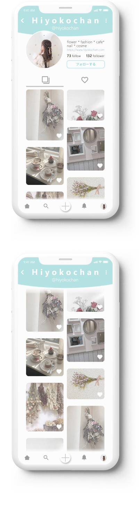

写真投稿アプリのプロフィール画面
2020.09 design

ターゲット:
生活の中で撮る写真を綺麗に飾りたいと思っている20代女性
目的:
アプリを快適に使ってもらうこと
特徴:
SNSで繋がるよりも、写真を記録することに重きを置いている
流れや構造:
プロフィールと、写真一覧は必須。メニューバーは操作しやすいように手元に近い画面下部に配置する。投稿した写真と、保存した写真はタブで切り替わるようにする。
方向性:
ターゲットが女性なので全体的に丸みを持たせて、写真の邪魔にならないように色数は抑える。
制作過程:
① 競合のSNSの調査
② 必要な機能をかき出す＆削る
③ 手書きで下書き
④ Figmaで作成
説明や感想:
写真投稿のアプリと言えばInstagramですが、広告やビジネス運用が増えてきています。今回つくったアプリはもっと、写真を飾って日記のように記録できる、というものをイメージしました。人の目を気にするより、自分一人一人の生活を大切にできる、そんな思いで作りました。